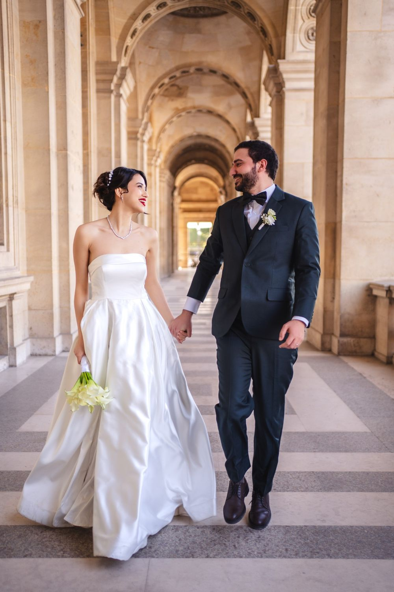
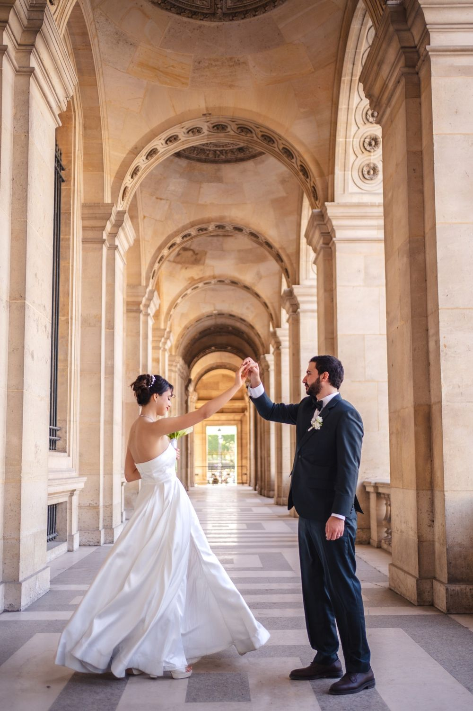
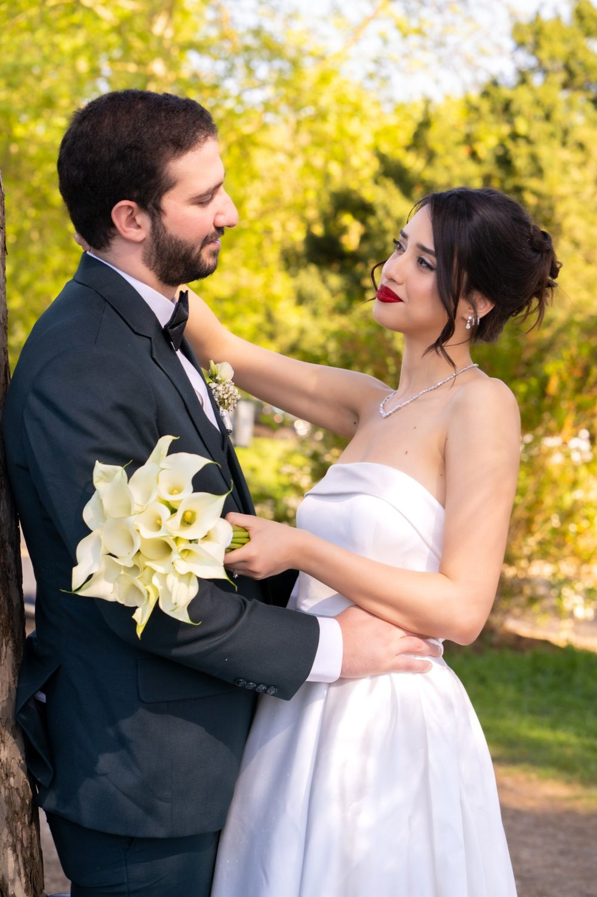
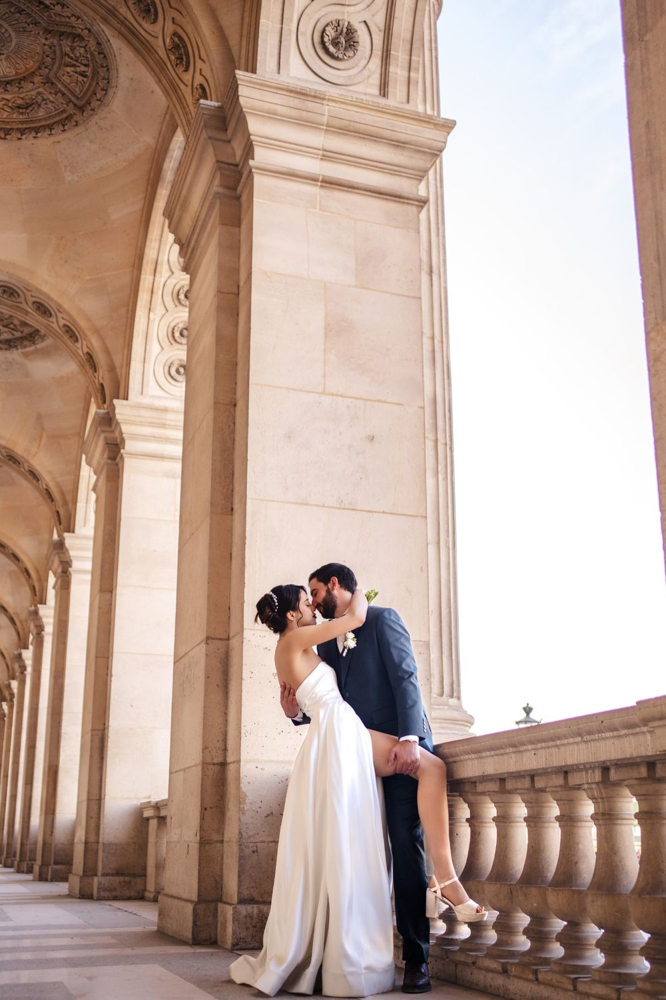

Les préparatifs
La robe, le costume, les mains qui tremblent un peu. Nous arrivons tôt pour saisir le calme avant la fête.



Photographes de mariage à Paris et dans toute l'Île-de-France. Votre journée racontée dans une lumière naturelle, avec des émotions vraies et des images qui vous ressemblent.
DécouvrirNous ne dirigeons pas un mariage, nous l'accompagnons. Nous restons discrets, nous guettons le regard qui s'attarde, le fou rire derrière le bouquet, la main de votre grand-mère dans la vôtre. Vous vivez votre journée, nous gardons ce qui compte.

La robe, le costume, les mains qui tremblent un peu. Nous arrivons tôt pour saisir le calme avant la fête.
Mairie, église ou cérémonie laïque. Nous restons discrets pour ne rien perdre des vœux et des larmes.
Photos de groupe organisées en quelques minutes, puis des portraits naturels de vos invités.
Discours, première danse, piste qui s'enflamme. Nous restons jusqu'au moment que vous choisissez.
De la préparation à la soirée dansante, le récit complet de votre mariage à Paris, en Île-de-France ou ailleurs. C'est notre métier principal.
→ 02Une promenade à deux pour vous apprivoiser devant l'objectif avant le jour J.
→ 03Nous immortalisons la demande en mariage ou une séance d'engagement.
→ 04Provence, Bretagne, Italie : nous nous déplaçons pour votre histoire.
→Hôtels de ville, quais de Seine, Montmartre, Marais, Tuileries.
Fontainebleau, Meaux, Provins, Vaux-le-Vicomte et domaines de campagne.
Versailles, Saint-Germain-en-Laye, Rambouillet, Chevreuse.
Évry, Étampes, Milly-la-Forêt, Dourdan.
Boulogne-Billancourt, Neuilly, Sceaux, Rueil-Malmaison.
Saint-Denis, Montreuil, Saint-Ouen, Pantin.
Vincennes, Saint-Mandé, Nogent-sur-Marne, Créteil.
Auvers-sur-Oise, Cergy, Pontoise, Enghien-les-Bains.
Que vous recherchiez un photographe de mariage à Paris, à Versailles ou en Seine-et-Marne, Le Couple Photographe couvre les huit départements d'Île-de-France. Nous connaissons les lieux, les horaires de lumière et les contraintes de chaque mairie, pour que vous n'ayez à penser à rien le jour J.
« Les plus belles photos sont celles que vous n'avez pas vu prendre. »
Vous nous parlez de votre date, de votre lieu et de ce qui vous ressemble.
Une proposition claire, puis la date est bloquée pour vous seuls.
Nous nous fondons dans la fête, vous profitez, nous racontons.
Images retouchées livrées dans une galerie privée à partager avec vos proches.
Notre approche part d'une idée simple : être deux change la façon de raconter une journée. Pendant que l'un de nous saisit l'image fixe, l'autre filme le mouvement, la voix, le rire qui suit. Vous obtenez ainsi deux regards complémentaires sur le même moment, sans multiplier les intervenants autour de vous. Nous privilégions la discrétion, la lumière naturelle quand elle le permet et des consignes simples pour que vous restiez vous-mêmes.
Chaque prestation commence par une écoute attentive de votre projet, qu'il s'agisse d'un mariage dans un palace parisien, d'une séance de famille dans un parc d'Île-de-France ou d'un événement d'entreprise en région. Pour les mariages marocains, tunisiens et algériens, nous prenons le temps de comprendre le déroulé et les traditions qui comptent pour vos familles. Notre travail est visible sur Instagram : @le_couple_photographe.
Vous nous présentez votre projet par le formulaire de contact ou sur Instagram. Nous écoutons vos envies, le lieu, l'ambiance recherchée et les moments qui comptent le plus pour vous. Ce premier échange permet ensuite à Le Couple Photographe de préparer un devis personnalisé.
Une fois la date réservée, nous construisons avec vous le déroulé de la séance ou de la journée. Nous repérons les lieux, notons les personnes à photographier et les temps forts à filmer. Pour un mariage, ce planning tient compte des traditions familiales et culturelles.
Le jour venu, le duo se répartit les rôles : l'un photographie, l'autre filme. Nous restons discrets, nous guidons quand c'est utile et nous laissons vivre les moments spontanés. Cette organisation à deux permet de couvrir plusieurs scènes sans rien manquer d'essentiel.
Après l'événement, nous sélectionnons, retouchons et montons vos images avec soin. Vous recevez une galerie de photos et un film qui racontent votre histoire dans l'ordre où vous l'avez vécue. Les modalités de livraison sont précisées dans votre devis personnalisé.
Oui. Nous photographions les mariages et les séances de couple à Paris et dans les huit départements d'Île-de-France : 75, 77, 78, 91, 92, 93, 94 et 95. Nous nous déplaçons aussi dans toute la France.
Les dates de printemps et d'été partent vite. Écrivez-nous dès que votre date et votre lieu sont fixés, idéalement 9 à 12 mois avant le mariage.
Un aperçu arrive rapidement après le grand jour. La galerie complète, retouchée, est livrée dans une galerie privée en ligne dont le délai est précisé dans votre devis.
Oui. Une séance couple à Paris ou ailleurs en Île-de-France permet de se découvrir avant le jour J et de repartir avec de beaux portraits.
Dites-nous où et quand vous vous mariez. Nous revenons vers vous avec disponibilités et tarifs.
@le_couple_photographe ↗© Le Couple Photographe · Photographe de mariage Paris & Île-de-France · Mis à jour le 10 octobre 2026
Demander un devis